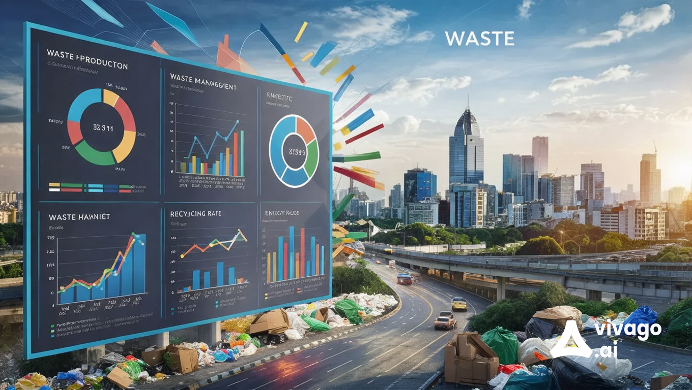

What is Waste Management Analytics?

Waste Management Analytics involves the systematic collection, analysis, and interpretation of data related to waste generation, collection, treatment, and disposal. This analytics approach uses various data sources, including waste generation rates, recycling statistics, and collection efficiency metrics, to optimize waste management practices.
The goal of waste management analytics is to enhance efficiency, reduce costs, and minimize environmental impact by providing insights that help in the strategic planning and implementation of waste management policies.
Importance of Waste Management Analytics
Waste management analytics is crucial for several reasons:
- Resource Optimization: Helps in efficiently allocating resources for waste collection and processing.
- Environmental Impact: Reduces landfill waste and promotes recycling and composting, minimizing environmental pollution.
- Cost Savings: Identifies inefficiencies in waste management processes, leading to reduced operational costs.
- Policy Development: Informs policymakers about current waste management trends and helps in creating effective waste management strategies.
Uses of Waste Management Analytics
Waste management analytics can be applied in various ways, including:
- Data-Driven Decision Making: Using analytics to inform decisions regarding waste collection routes and schedules.
- Performance Monitoring: Evaluating the effectiveness of waste management programs and identifying areas for improvement.
- Public Awareness Campaigns: Analyzing data to develop campaigns aimed at increasing recycling and reducing waste.
- Predictive Analytics: Forecasting future waste generation trends to enhance planning and resource allocation.
- Compliance Reporting: Assisting organizations in meeting regulatory requirements related to waste management.
Contact Us
If you would like to learn more about waste management analytics or have questions, please reach out to us:
Email: ecoitsolutions786@gmail.com
Phone: 9390455709
Our team is here to assist you with data-driven solutions for effective waste management.